Note
Go to the end to download the full example code.
KDE Plot¶
Create kernel density estimation (KDE) plots for visualizing distributions.
KDE plots show the estimated probability density function of a continuous variable, providing a smooth representation of the data distribution.
Load data¶
import numpy as np
import pandas as pd
import cnsplots as cns
tips = cns.datasets.load_dataset("tips")
iris = cns.datasets.load_dataset("iris")
Basic KDE plot¶
Simple density estimation with mode line.
cns.figure(100, 100)
ax = cns.kdeplot(data=tips, x="total_bill", add_mode=True)
ax.set_title("Basic KDE with Mode Line")
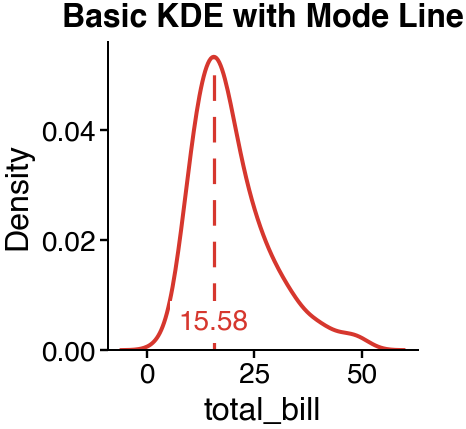
Text(0.5, 1.0, 'Basic KDE with Mode Line')
KDE plot without mode line¶
Density curve only.
cns.figure(100, 100)
ax = cns.kdeplot(data=tips, x="total_bill", add_mode=False)
ax.set_title("KDE without Mode")
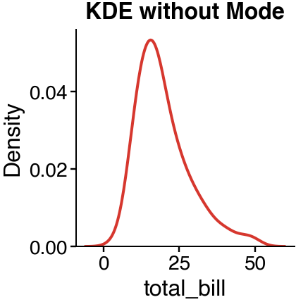
Text(0.5, 1.0, 'KDE without Mode')
Grouped KDE plot with hue¶
Compare distributions across groups.
cns.figure(100, 100)
ax = cns.kdeplot(data=tips, x="total_bill", hue="sex")
ax.set_title("KDE by Sex")
cns.take_legend_out()
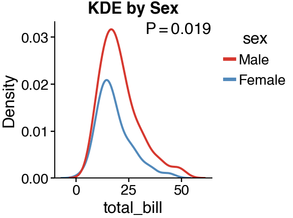
/Users/runner/work/cnsplots/cnsplots/site-build/.sphinx-staging-g9wctvk4/src/cnsplots/plots/_distribution.py:472: FutureWarning: The default of observed=False is deprecated and will be changed to True in a future version of pandas. Pass observed=False to retain current behavior or observed=True to adopt the future default and silence this warning.
grouped = data.groupby(hue)
KDE plot with multiple groups¶
Compare more than two groups.
cns.figure(100, 100)
ax = cns.kdeplot(data=tips, x="total_bill", hue="day")
ax.set_title("KDE by Day")
cns.take_legend_out()
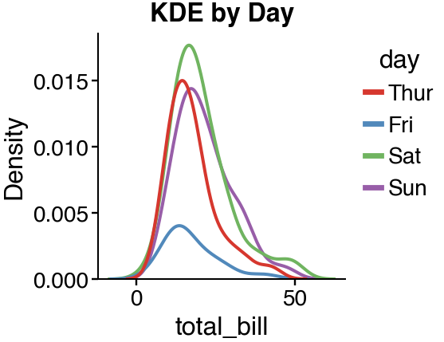
Filled KDE plot¶
Fill the area under the curve with fill=True.
cns.figure(100, 100)
ax = cns.kdeplot(data=tips, x="total_bill", fill=True, alpha=0.5)
ax.set_title("Filled KDE")
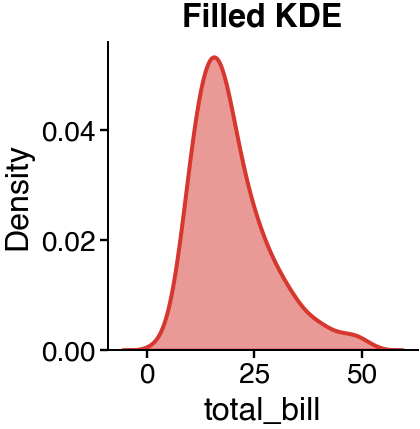
Text(0.5, 1.0, 'Filled KDE')
Filled grouped KDE plot¶
Filled density curves for multiple groups.
cns.figure(100, 100)
ax = cns.kdeplot(data=tips, x="total_bill", hue="sex", fill=True, alpha=0.3)
ax.set_title("Filled Grouped KDE")
cns.take_legend_out()
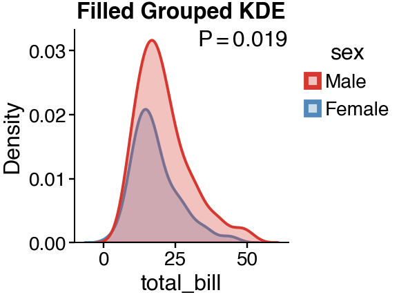
/Users/runner/work/cnsplots/cnsplots/site-build/.sphinx-staging-g9wctvk4/src/cnsplots/plots/_distribution.py:472: FutureWarning: The default of observed=False is deprecated and will be changed to True in a future version of pandas. Pass observed=False to retain current behavior or observed=True to adopt the future default and silence this warning.
grouped = data.groupby(hue)
Cumulative KDE plot¶
Show cumulative distribution with cumulative=True.
cns.figure(100, 100)
ax = cns.kdeplot(data=tips, x="total_bill", cumulative=True)
ax.set_title("Cumulative KDE (CDF)")
ax.set_ylabel("Cumulative Probability")
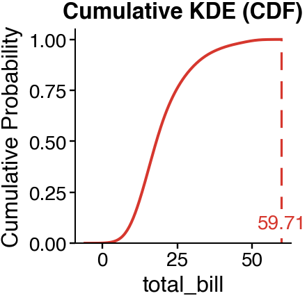
Text(33.38000000000001, 0.5, 'Cumulative Probability')
Cumulative grouped KDE¶
Compare cumulative distributions.
cns.figure(100, 100)
ax = cns.kdeplot(data=tips, x="total_bill", hue="sex", cumulative=True)
ax.set_title("Cumulative KDE by Sex")
cns.take_legend_out()
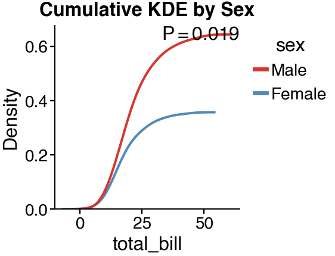
/Users/runner/work/cnsplots/cnsplots/site-build/.sphinx-staging-g9wctvk4/src/cnsplots/plots/_distribution.py:472: FutureWarning: The default of observed=False is deprecated and will be changed to True in a future version of pandas. Pass observed=False to retain current behavior or observed=True to adopt the future default and silence this warning.
grouped = data.groupby(hue)
KDE with different bandwidth¶
Adjust smoothness with bw_adjust.
mp = cns.multipanel(max_width=480)
mp.panel("A", 100, 80)
cns.kdeplot(data=tips, x="total_bill", bw_adjust=0.3)
mp.get_axes("A").set_title("bw_adjust=0.3 (rough)")
mp.panel("B", 100, 80)
cns.kdeplot(data=tips, x="total_bill", bw_adjust=1.0)
mp.get_axes("B").set_title("bw_adjust=1.0 (default)")
mp.panel("C", 100, 80)
cns.kdeplot(data=tips, x="total_bill", bw_adjust=2.0)
mp.get_axes("C").set_title("bw_adjust=2.0 (smooth)")
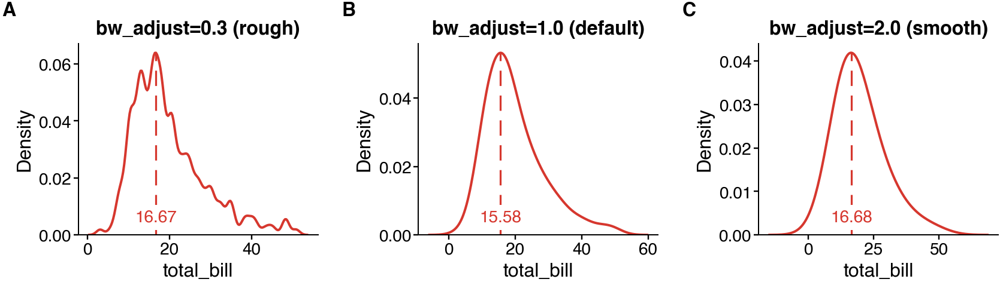
Text(0.5, 1.0, 'bw_adjust=2.0 (smooth)')
KDE with line styles¶
Customize line width and style.
mp = cns.multipanel(max_width=350)
mp.panel("A", 120, 80)
cns.kdeplot(data=tips, x="total_bill", linewidth=0.5)
mp.get_axes("A").set_title("Thin line")
mp.panel("B", 120, 80)
cns.kdeplot(data=tips, x="total_bill", linewidth=2)
mp.get_axes("B").set_title("Thick line")
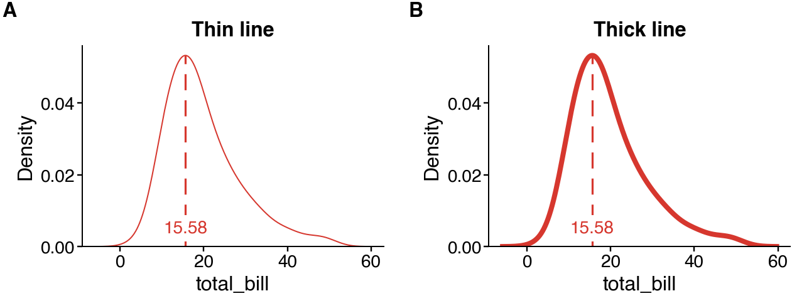
Text(0.5, 1.0, 'Thick line')
KDE plot with custom palette¶
Use different color palettes.
cns.figure(100, 100, "Tableau")
ax = cns.kdeplot(data=tips, x="total_bill", hue="day", fill=True, alpha=0.3)
ax.set_title("Tableau Palette")
cns.take_legend_out()
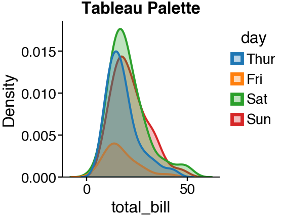
Multiple KDE comparisons¶
Compare distributions across different variables.
mp = cns.multipanel(max_width=350)
mp.panel("A", 120, 80)
cns.kdeplot(data=iris, x="sepal_length", hue="species")
mp.get_axes("A").legend().remove()
mp.get_axes("A").set_title("Sepal Length")
mp.panel("B", 120, 80)
cns.kdeplot(data=iris, x="petal_length", hue="species")
mp.get_axes("B").legend().remove()
mp.get_axes("B").set_title("Petal Length")
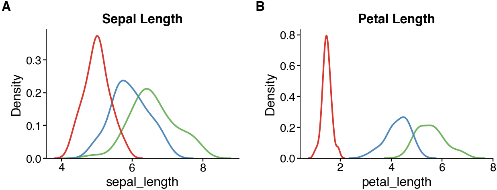
/Users/runner/work/cnsplots/cnsplots/site-build/.sphinx-staging-g9wctvk4/examples/kdeplot.py:152: UserWarning: No artists with labels found to put in legend. Note that artists whose label start with an underscore are ignored when legend() is called with no argument.
mp.get_axes("A").legend().remove()
/Users/runner/work/cnsplots/cnsplots/site-build/.sphinx-staging-g9wctvk4/examples/kdeplot.py:157: UserWarning: No artists with labels found to put in legend. Note that artists whose label start with an underscore are ignored when legend() is called with no argument.
mp.get_axes("B").legend().remove()
Text(0.5, 1.0, 'Petal Length')
2D KDE plot (bivariate)¶
Visualize joint distribution of two variables.
cns.figure(150, 150)
ax = cns.kdeplot(data=iris, x="sepal_length", y="sepal_width")
ax.set_title("2D KDE")
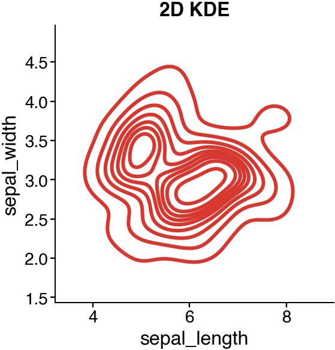
/Users/runner/work/cnsplots/cnsplots/.venv/lib/python3.11/site-packages/seaborn/distributions.py:1176: UserWarning: The following kwargs were not used by contour: 'linewidth'
cset = contour_func(
Text(0.5, 1.0, '2D KDE')
2D KDE with filled contours¶
Fill the 2D density contours.
cns.figure(150, 150)
ax = cns.kdeplot(data=iris, x="sepal_length", y="sepal_width", fill=True, cmap="parula")
ax.set_title("Filled 2D KDE")
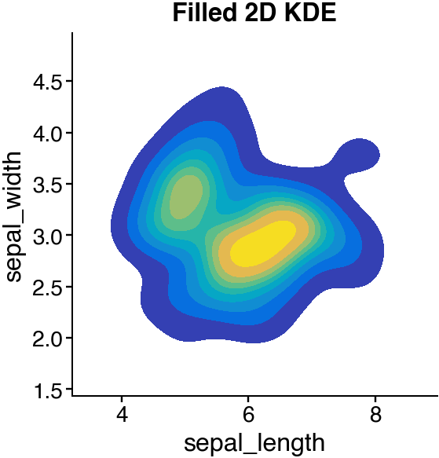
/Users/runner/work/cnsplots/cnsplots/.venv/lib/python3.11/site-packages/seaborn/distributions.py:1176: UserWarning: The following kwargs were not used by contour: 'linewidth'
cset = contour_func(
Text(0.5, 1.0, 'Filled 2D KDE')
2D KDE by group¶
Compare bivariate distributions across groups.
cns.figure(150, 150)
ax = cns.kdeplot(data=iris, x="sepal_length", y="sepal_width", hue="species")
ax.set_title("2D KDE by Species")
cns.take_legend_out()
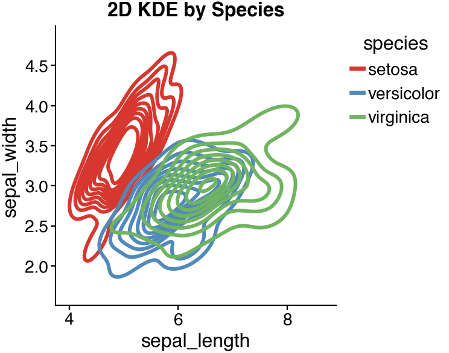
/Users/runner/work/cnsplots/cnsplots/.venv/lib/python3.11/site-packages/seaborn/distributions.py:1176: UserWarning: The following kwargs were not used by contour: 'linewidth'
cset = contour_func(
KDE for comparing distributions¶
Visual comparison of different groups.
np.random.seed(42)
comparison_data = pd.DataFrame(
{
"value": np.concatenate(
[
np.random.normal(10, 2, 200),
np.random.normal(15, 3, 200),
np.random.normal(12, 1.5, 200),
]
),
"group": ["A"] * 200 + ["B"] * 200 + ["C"] * 200,
}
)
cns.figure(100, 100, "Bold")
ax = cns.kdeplot(data=comparison_data, x="value", hue="group", fill=True, alpha=0.3)
ax.set_title("Group Distribution Comparison")
cns.take_legend_out()
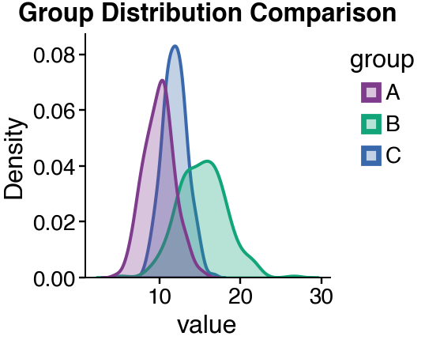
KDE with vertical reference lines¶
Add mean/median reference lines.
cns.figure(100, 100)
ax = cns.kdeplot(data=tips, x="total_bill")
mean_val = tips["total_bill"].mean()
median_val = tips["total_bill"].median()
ax.axvline(
mean_val, color="red", linestyle="--", linewidth=0.8, label=f"Mean: {mean_val:.1f}"
)
ax.axvline(
median_val,
color="blue",
linestyle=":",
linewidth=0.8,
label=f"Median: {median_val:.1f}",
)
ax.legend(fontsize=7)
ax.set_title("KDE with Mean and Median")
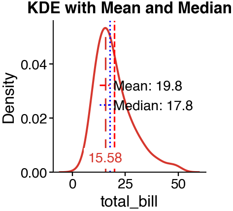
Text(0.5, 1.0, 'KDE with Mean and Median')
Total running time of the script: (0 minutes 1.235 seconds)